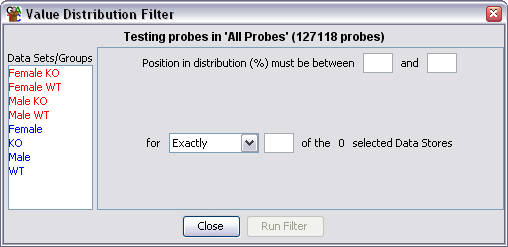

Value Distribution Filter
The value distribution filter acts in a very similar way to the
Individual Probe Value Filter
except that instead of using the probe values directly it sorts
all of the values for each data store and coverts them into a
percentage position within the total distribution of values for
that DataStore.
This allows you to select, for example, the top 10% of values for
a given data store. You can also filter across multiple stores, so
you could select probes which were in the bottom 5% of values in
at least 2 of 3 DataStores. This independence from the actual values
being used allows for more powerful comparative filters.

Options
- You need to select one or more DataStores from the list on the left. Data
Sets are shown in red and Data Stores are shown in Blue.
- You can select an upper and a lower limit for the range of values you want
to include. The limits you enter should be expressed as percentages of the
distribution (eg 5% to 95%). You only have to specify one of these values.
If you leave the lower value blank then anything under the upper cutoff will
pass. If you leave the upper value blank then anything above the lower cutoff
will pass.
- Finally you can choose in how many of your selected DataStores a probe needs to fall
within your defined range in order to be included in the final list.